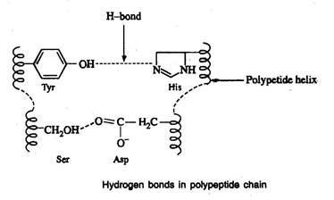
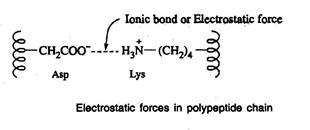
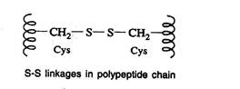
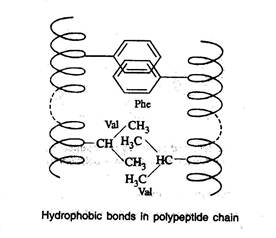
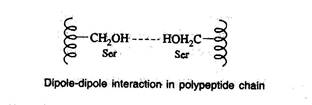
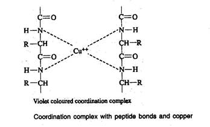

BIC 101 :: Lecture 13 & 14 :: CONFORMATION OF PROTEINS

Conformation of a protein refers to the three-dimensional structure in its native state. There are many different possible conformations for a molecule as large as a protein. A protein can perform its function only when it is in its native condition. Due to the complexity of three-dimensional structures, the structure of protein is discussed at different levels of its organization.
Four levels of structural organization can be distinguished in proteins:
1. Primary
2. Secondary
3. Tertiary
4. Quaternary
Primary structure
- Primary structure of protein refers to the number of amino acids and the order in which they are covalently linked together.
- It also refers to the location of disulfide bridges, if there are any, in a polypeptide chain.
- The peptide bond is covalent in nature, quiet stable and referred as backbone of the protein.
- They can be disrupted by chemical or enzymatic hydrolysis but are not directly influenced by salt concentration, change in pH or solvent.
- Frederick Sanger in 1953 determined the complete amino acid sequence of insulin for the first time.
The important steps involved in determining the primary structure of protein are
- Determination of number of (chemically different) polypeptide chains or subunits in the protein.
- Separation of polypeptide chains if more than one are present in a protein.
- Determination of the amino acid sequence of the subunits.
- Elucidation of the position of the disulfide bonds, if any, between and within the subunits.
1. Determination of number of polypeptides or subunits
Determination of the number of C-terminal or N-terminal amino acids will indicate the number of polypeptides in a protein.
H2N -------------------> COOH
N-terminal C-terminal
N-terminal identification
- Fluoro dinitro benzene (FDNB), known as Sanger's reagent, was used to identify the N-terminal amino acid.
- This reagent was replaced by dansyl chloride and Edman's reagent (phenyl isothiocyanate, PITC).
- Edman's reagent is also used to determine the amino acid sequence of a polypeptide chain from the N-terminal by subjecting the polypeptide to repeated cycles of Edman degradation.
- After every cycle, the newly liberated phenylthiohydantoin (PTH) amino acid was identified
- The sequence of peptides containing 30-40 amino acids can be determined using a sequencer by adopting the Edman's degradation method.
C-terminal identification
C-terminal amino acid can be determined by methods similar to those used for the N-terminal acid.
- Hydrazine is used to find out the C-terminal amino acid.
- It reacts with the carbonyl group of each peptide bond except C-terminal amino acid.
- The bond is cleaved and each amino acid derivative is released as the hydrazide derivative (hydrazinolysis).
- Since the carboxyl group of C-terminal amino acid is not involved in a peptide bond, it remains in the mixture as the only unmodified amino acid
- After chromatographic separation and comparison with the standards, the C-terminal amino acid can be identified.
- Carboxypeptidases are used for enzymic determination of the C-terminal amio acid.
Separation and purification of polypeptide chains
- Determination of C-terminal and/or N-terminal amino acids reveals the presence of one or more polypeptide chains in a protein.
- If the protein contains more than one polypeptide chain, separation of polypeptide chain is essential.
- If the polypeptide chains are connected by disulfide bond, they are cleaved to separate the individual peptide chains.
- The polypeptide is treated with 2-mercaptoethanol (HS-CH2-CH2OH) so that reductive cleavage occurs and the polypeptide chains are separated.
- The resulting free-SH groups are usually alkylated by treatment with iodoacetic acid
- After cleaving the disulfide links using mercaptoethanol, subunits are dissociated using denaturing agents such as urea or guinidinum ion or detergents such as sodium dodecyl sulphate (SDS).
- The dissociated subunits are then separated using ion exchange or gel filtration chromatographic method.
Amino acid sequencing of polypeptides
- The amino acid sequence in polypeptides with 30-40 amino acids can be determined by Edman reaction.
- For polypeptides containing more than 40 amino acids, both enzymatic and chemical methods are employed to break polypeptide chains into smaller peptides.
- The enzyme, trypsin hydrolyses the peptide bond on the carboxyl side of the basic amino acid residues of lysine or arginine.
- The chemical reagent, cyanogens bromide cleaves peptide bond on the carboxyl side of methionine residues.
- The hydrolyzed peptides are separated and the amino acid sequence is determined by Edman reaction.
- The hydrolysis of the original polypeptide by two different methods separately gives overlapping regions, from which the sequence is derived
Secondary structure
- Secondary structure refers to the steric relationship of amino acids that are close to one another in the linear sequence.
- The folding of a linear polypeptide chain occurs to form a specific coiled structure.
- Such coiling or folding is maintained by hydrogen bonds and hydrogen bond is the only bond responsible for secondary structure.
- X-ray studies of several polypeptides by Linus Pauling and Robert Corey revealed that the peptide group has a rigid, planar structure which is a consequence of resonance interactions that give the peptide bond a 40% double bond character.
- Peptide groups mostly assume the transconformation in which successive C2 atoms are on opposite sides of peptide bond joining them.
- The cis configuration creates steric interference.
- If a polypeptide chain is twisted by the same amount each of its C atoms, it assumes a helical conformation
Helix structure
- The -helix is the most stable arrangement of polypeptides
- The helix structure of proteins is stabilized by intramolecular hydrogen bonding.
- In this structure, hydrogen bonds are formed between the C=O group of one peptide bond and the N-H group of another after 3 amino acid units.
- The polypeptide chain constituted by L-amino acids form a right-handed helix, whereas the polypeptide chains made up of D-amino acids form a left-handed helix.
- In the -helical conformation, all the side chains lie outside the helix whereas C, N, O and H of the peptide bond lie in the same plane.
- Certain amino acids tend to disrupt the -helix. Among these are proline (the N atoms is part of the rigid ring and no rotation of the N-C bond can occur) and amino acid with charged or bulk R groups that either electrostatically or physically interferes with helix formation.
The -pleated sheet structure
- Pauling and Corey also proposed a second ordered structure, the -pleated sheet for polypeptide.
- This structure is a result of intermolecular hydrogen bonding between the polypeptide chains to form a sheet like arrangement.
- There are two ways in which proteins chains can form the pleated sheet structure.
- One is with the chains running in the same direction i.e. the -COOH or NH2 ends of the polypeptide chains lying all at the top or all at the bottom of the sheet. This is called parallel pleated-sheet structure.
- In another type, known as antiparallel -pleated sheet structure, the polypeptide chains alternate in such a way that the -COOH end of the one polypeptide is next to the -NH2 end of the other i.e. polypeptide chains run in opposite directions.
The random coil
- Regions of proteins that are not identifiably organized as helices or pleated sheets are said to be present in random coil conformation.
- Considerable portion of the protein may be present in this conformation.
- The term 'random' is unfortunate which imply less biological significance than more highly repeating regions.
- But in terms of biological function, the regions of random coil are of equal importance to those of helix and pleated sheet.
Tertiary structure
- Tertiary structure refers to the steric relationship of amino acid residues that are far apart in the linear sequence.
- This leads to the twisting of polypeptide chains into specific loops and bends which are maintained chiefly by five kinds of bonds.
Hydrogen bonds
- Hydrogen bonds are formed between the side chain (R group) of amino acids having a hydrogen donor group and an acceptor group

Salt-linkages (electrostatic forces; ionic bonds)
- Salt linkages are due to the interaction between amino groups of basic amino acids and the carboxyl group of acidic amino acids present in the R group

Disulfide bonds (S-S linkages)
- The S-S linkages are formed by the oxidation of sulfhydryl (-SH) group of two cysteine side chains

Hydrophobic bonds
- Hydrophobic bonds are formed as a result of interaction between non-polar side chains

Dipole-dipole interaction
- This interaction occurs between polar unionized side chains
- The folding of a polypeptide chain due to different covalent and non-covalent interactions is shown below.
- Out of the above bonds, the disulfide bond (covalent bond) is the strongest and cannot be affected by solvent, pH, temperature and salts whereas the above conditions.
- The disulfide bond can be split and reformed by oxidation/reduction respectively
- The tertiary structure gains special importance in the case of enzymes.

Domain
- Domains are structurally independent units that have the characteristics of a small globular protein.
- Domains often have a specific function such as the binding of a small molecule.
- A long peptide strand of a protein will often fold into multiple, compact semiindependent folded regions or domains.
- Each domain having a characteristic spherical geometry with a hydrophobic core and polar surface very much like the tertiary structure of a whole globular protein
- The domains of a multidomain protein are often interconnected by a segment of polypeptide chain lacking regular secondary structure.
- In enzymes with more than one substrate or allosteric effector sites the different binding sites are often located in different domains.
- In multifunctional proteins, the different domains perform different tasks.
Quaternary structure
- Proteins that have more than one subunit or polypeptide chains will exhibit quaternary structure.
- Quaternary structure refers to a functional protein aggregate (organization) formed by interpolypeptide linkage of subunits or polypeptide chains.
- These subunits are held together by noncovalent surface interaction between the polar side chains.
- Proteins formed like above are termed oligomers and the individual polypeptide chains are variously termed protomers, monomers or subunits.
- The most common oligomeric proteins contain two or four protomers and are termed dimers or tetramers, respectively.
- Myoglobin has no quaternary structure since, it is composed of a single polypeptide chain.
- Hemoglobin molecule, which consists of four separate polypeptide chains, exhibits quaternary structure.
{kind=link}
A schematic of hemoglobin.
The ribbon parts represent the protein globin; the four green parts are the heme groups.
- Quaternary structure may influence the activity of enzymes.
- Some enzymes are active only in their quaternary state and become inactive when split into smaller units.
- Other enzymes are inactive in the quaternary state and are activated only when they are dissociated to form monomeric state.
Physical and chemical properties of proteins
Physical
- Pure proteins are generally tasteless, though the predominant taste of protein hydrolysates is bitter.
- Pure proteins are odourless.
- Because of the large size of the molecules, proteins exhibit many properties that are colloidal in nature.
- Proteins, like amino acids, are amphoteric and contain both acidic and basic groups.
- They possess electrically charged groups and hence migrate in an electric field.
- Many proteins are labile and readily modified by alterations in pH, UV radiation, heat and by many organic solvents.
- The absorption spectrum of protein is maximum at 280 nm due to the presence of tyrosine and tryptophan, which are the strongest chromophores in that region.
- Hence the absorbance of the protein at this wavelength is adapted for its determination.
Denaturation of protein
- The comparatively weak forces responsible for maintaining secondary, tertiary and quaternary structure of proteins are readily disrupted with resulting loss of biological activity.
- This disruption of native structure is termed denaturation.
- Physically, denaturation is viewed as randomizing the conformation of a polypeptide chain without affecting its primary structure
- Physical and chemical factors are involved in the denaturation of protein
- Heat and UV radiation supply kinetic energy to protein molecules causing th atoms to vibrate rapidly, thus disrupting the relatively weak hydrogen bonds and salt linkages. This results in denaturation of protein leading to coagulation.
Enzymes easily digest denatured or coagulated proteins.
b) Organic solvents such as ethyl alcohol and acetone are capable of forming
intermolecular hydrogen bonds with protein disrupting the intramolecular
hydrogen bonding. This causes precipitation of protein.
- Acidic and basic reagents cause changes in pH, which alter the charges present on the side chain of protein disrupting the salt linkages.
- Salts of heavy metal ions (Hg2+, Pb2+) form very strong bonds with
carboxylate anions of aspartate and glutamate thus disturbing the salt linkages. This property makes some of the heavy metal salts suitable for use as antiseptics.
Renaturation
- Renaturation refers to the attainment of an original, regular three-dimensional functional protein after its denaturation.
- When active pancreatic ribonuclease A is treated with 8M urea or mercaptoethanol, it is converted to an inactive, denatured molecule.
- When urea or mercaptoethanol is removed, it attains its native (active) conformation.
Chemical
Colour reactions of proteins
- The colour reactions of proteins are of importance in the qualitative detection and quantitative estimation of proteins and their constituent amino acids.
- Biuret test is extensively used as a test to detect proteins in biological materials.
Biuret reaction
- A compound, which is having more than one peptide bond when treated with Biuret reagent, produces a violet colour. This is due to the formation of coordination complex between four nitrogen atoms of two polypeptide chains and one copper atom

Xanthoproteic reaction
- Addition of concentrated nitric acid to protein produces yellow colour on heating, the colour changes to orange when the solution is made alkaline. The yellow stains upon the skin caused by nitric acid are the result of this xanthoproteic reaction. This is due to the nitration of the phenyl rings of aromatic amino acids.
Hopkins-Cole reaction
- Indole ring of tryptophan reacts with glacial acetic acid in the presence of concentrated sulphuric acid and forms a purple coloured product. Glacial acetic acid reacts with concentrated sulphuric acid and forms glyoxalic acid, which in turn reacts with indole ring of tryptophan in the presence of sulphuric acid forming a purple coloured product.
| Download this lecture as PDF here |